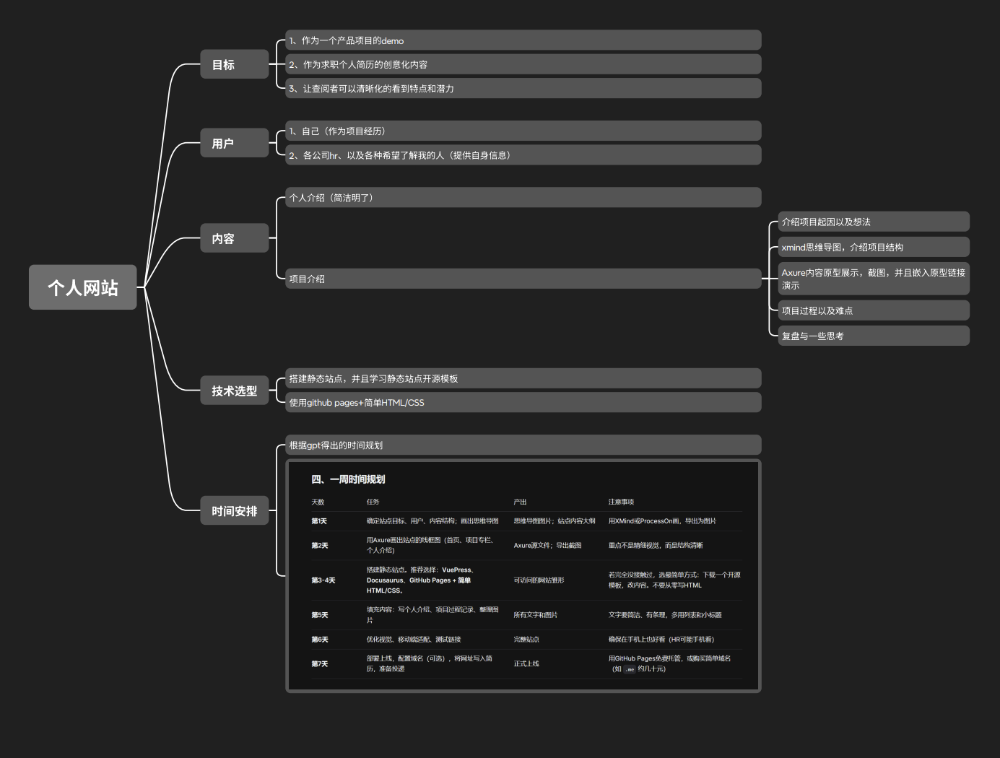
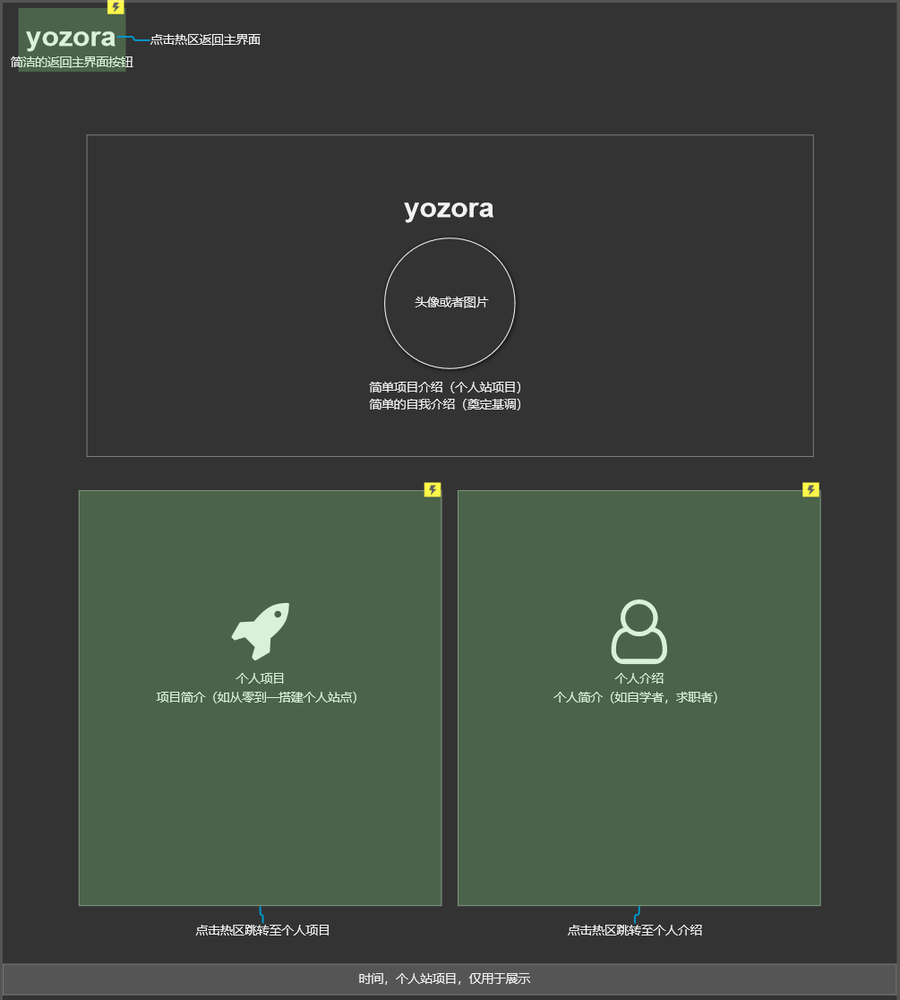

📌 项目：个人作品集网站
这个网站是我独立完成的产品项目，从需求分析、原型设计到开发部署、反馈收集，完整走了一遍产品流程。
🧠 立项思维导图

🎨 Axure 原型设计

📅 建站过程记录
Day 1
确定网站目标与内容结构，画出思维导图
Day 2
用 Axure 绘制低保真原型，规划页面跳转逻辑
Day 3-4
编写 HTML/CSS，实现响应式布局
Day 5
集成评分反馈模块，测试表单功能
Day 6
部署到 GitHub Pages，生成公网链接
Day 7
优化移动端适配，收集反馈并迭代
📄 产品文档 & 交互设计

📝 给这个项目打分 & 提出建议
你的评分：